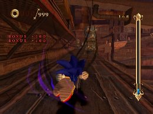
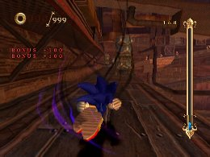
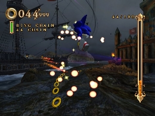

経験値を稼ぐのに有効なスキル
応用編
スキルの中にはミッション中、特定の条件を満たすことで経験値を獲得できるものが幾つか存在します。
しかし大半は、特殊条件でしか入手できないレアなスキルとなっており、効果も高いものになっています。
なお獲得した経験値は、リザルト画面の「経験値ボーナス」の項目にまとめられています。
「エキスパートアタック」
パイレーツストーム・ダイハードチャレンジを金メダルクリアすると手に入ります。
「ホーミングアタック」を行う度に経験値が獲得できます。
使用頻度の高いアクションで獲得できるため、「経験値を稼ぐ」という意識をもたなくても稼げ、かなりお得なスキルです。
「エキスパートドリフト」
パイレーツストーム・ノーパールを金メダルクリアすると手に入ります。
直角コーナーで「ドリフト走行」を行うと経験値を獲得できます。
「ドリフト走行」を行うために、特殊な操作を要求されることはありませんが、コーナーに入るまでにある程度スピードが出ていることが必要です。
直角コーナーの存在するステージはそれ程多くはありませんが、存在するステージには直角コーナーの数が多い傾向にあるため、かなり稼ぐことができます。
 

ドリフトアクション中に２ボタンを押しておくと、ドリフトアクションの終了直後にジャンプできる状態になります。これを覚えておけば、直角コーナー直後にトラップがある場合などにブレーキを使わずに対処することができるでしょう。
「ホーミングボーナス」
ナイトパレス・ヘッドトゥヘッドを金メダルクリアすると手に入ります。
「ホーミングアタックで連続してマジンを倒す」と経験値を獲得できます。
「エキスパートアタック」と違いマジンを倒す必要がありますが、その分獲得できる経験値も多くなっています。
マジンが多く、さらに密集して配置されているステージでかなり稼ぐことができます。

チェインは着地、スライディング、ジャンプが挟まるとリセットされます。
チェイン中にバネや宝箱へのホーミングが挟まってもチェインが途切れることはありません。
2チェインで20
3で50
4で100
5で150
6～9まで毎回200
10～15まで毎回300
16以上毎回500 の経験値を取得します。
「リング・オブ・ゼロ」
スケルトンドーム・ランページを金メダルクリアすると手に入ります。
所持している「リング個数が０個」の時に経験値を取得するアクションを行うとその取得した経験値が倍になります。
単体では効果はなく、さらに「リングが０個」の状態ということでリスクも高く、やや上級者向けのスキルになっています。
「チェインボーナス」
ナイトパレス・ランページ！を金メダルクリアすると手に入ります。
リングを連続で取得すると経験値が獲得できます。
「チェイン オブ リングス（リングチェインを○○チェイン決めろ）」ミッションと同様のシステムで、チェインのカウントがスタートした後、制限時間内により多くのチェインをつなげることで経験値の獲得量が増加します。
かなりテクニカルなスキルですが、上記「チェイン オブ リングス」ミッションで使用することでかなりの効果が期待できます。

チェインは最後に取得したリングから1秒以内に次のリングを取得することで成立します。
20～24チェインで100
25～29まで200
30～34まで300
35～39まで400
40～44まで500
45～49まで700
50以上で1000 の経験値を取得します。
つまり、経験値稼ぎを重視する場合は50でチェインを途切れさせると効率的です。
「コレクションプレゼント」
アルフ・ライラ・ワ・ライラ戦を金メダルクリアすると手に入ります。
ステージ内でのリングの獲得上限が１００個に制限され、１００個の状態を維持した状態で一定距離進むと経験値を獲得できます。
１００個の状態からノーミスでプレイしないと経験値は獲得できないため、やや上級者向けのスキルですが、使いこなせるとかなりの経験値を獲得できます。
「サブＣプレゼント」
レベル５５で取得する「コレクションプレゼント」の裏スキルです。
基本の効果は「コレクションプレゼント」と同様ですが、こちらは経験値を獲得する時にソウルゲージを消費するようになっています。
逆に言うとソウルゲージが溜まっていないと、十分な経験値を獲得できないため、使い勝手は悪いスキルとなっています。
 RSS
RSS